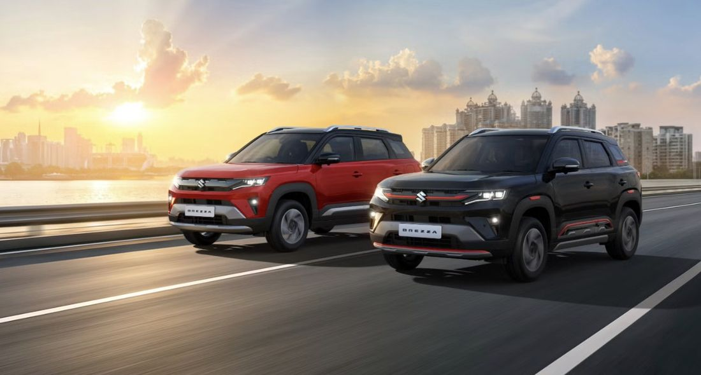

2026 Maruti Brezza Variants Explained: Which One Can You Actually Order?

Image: Maruti Suzuki
Every Brezza variant guide out there describes four trims and calls it a day. That's not actually the decision you're making. Once you factor in the three powertrains and which gearbox goes with which, there are 19 distinct configurations you can actually order, and several combinations you might want simply aren't on the table. Before you fall in love with a specific trim, here's what you can and can't pair it with.
The Three Constraints That Actually Matter
Want the turbo? It's manual only, on every single trim. Want an automatic? You need at least the VXi, since it's not offered on the base LXi at any price. Want CNG? You can have it on LXi, VXi, or ZXi, but not on the range-topping ZXi+. Know these three rules before you fall for a specific trim, because they'll decide your shortlist faster than any feature list will.
The Powertrain-First Way to Decide
Most guides work trim-first: pick LXi, VXi, ZXi, or ZXi+, then see what engine options exist within it. That's backwards for most buyers, because the powertrain you want usually eliminates trims for you before features even enter the conversation.
| If you want... | Gearbox options | Trims it's available on |
|---|---|---|
| 1.0 Turbo-Petrol | 6-speed manual only | LXi, VXi, ZXi, ZXi+ (all four) |
| 1.5 Petrol | 6-speed manual | LXi, VXi, ZXi |
| 1.5 Petrol | 6-speed automatic | VXi, ZXi, ZXi+ (not LXi) |
| S-CNG | 6-speed manual only | LXi, VXi, ZXi (not ZXi+) |
Read that table before you read anything else about trims. If you want an automatic and a small budget, VXi AT is your floor, not LXi. If you want CNG and the top trim, that combination doesn't exist, full stop, so decide which one you're actually willing to give up.
LXi: The Base Trim
Six airbags, ESP, hill-hold assist, three-point seatbelts for every seat, electrically adjustable mirrors, and front power windows. That's the real safety-first case for the LXi, and it's a genuinely solid baseline. What it skips is everything you'd associate with a modern cabin: no touchscreen at all, no DRLs, no fog lamps, no chrome grille, no alloy wheels. This is the trim for someone who wants a dependable, no-frills SUV and genuinely doesn't care about infotainment. If you think you might miss the screen six months in, don't start here.
VXi: Where It Starts Feeling Complete
This is the trim where the Brezza stops feeling stripped-down. Touchscreen infotainment, steering-mounted controls, keyless entry, auto climate control, wireless smartphone connectivity, and the first alloy wheels in the range all show up here. It's also the minimum trim if you want the automatic gearbox at all. Every source we cross-checked agrees on the same thing: this is where most first-time SUV buyers should be looking, and it's the trim virtually every competing guide names as the best value entry point. We agree, with one caveat: if you can stretch to the ZXi, keep reading before you commit.
Best Value Pick
Go one step past the "obvious" VXi recommendation and look at the ZXi. It adds a sunroof, LED lighting, wireless charging, PM2.5 cabin filtration, and Level 1 ADAS (lane-adjacent safety functions that debut at this trim, not lower), for a manageable step up. If you're financing over 5+ years anyway, the monthly difference between VXi and ZXi is small enough that the extra kit is usually worth it. The VXi remains the right call if you're strictly budget-capped, not because it's the better car.
ZXi: The Value Peak
Sunroof, full LED lighting, wireless charging, PM2.5 filtration, and the entry point for Level 1 ADAS. This is also the trim to pick if you specifically want the turbo engine with real driver-assist kit: Autocar India's own testing flagged the ZXi turbo specifically for adding cruise control, front parking sensors, blind-spot warning, rear cross-traffic alert, and a tyre-pressure monitoring system, calling it the best-balanced turbo variant in the whole range. If you're cross-shopping ZXi against the flagship ZXi+, know this going in: the actual gap between them is smaller than the price difference suggests.
ZXi+: The Flagship, With a Catch
The 10.1-inch display, connected-car tech, head-up display, adaptive cruise control, and 360-degree camera all live here, and on paper it's the fully-loaded version. But independent variant-by-variant comparisons found the real-world difference between ZXi and ZXi+ comes down to dual-tone alloy wheels and fog lamps, not a dramatically longer feature list. And remember the constraint from the top of this article: ZXi+ cannot be had with CNG. If a low running cost matters to you as much as top-spec equipment, this trim actively works against that goal.
Our Recommendation
If you're CNG-focused and budget-conscious: VXi CNG. If you want the best all-round balance of kit and price: ZXi, in whichever powertrain fits your driving (1.5 petrol for mixed use, turbo manual if you actually enjoy driving, CNG if you're covering serious monthly kilometres). Only reach for the ZXi+ if adaptive cruise control and the bigger screen matter enough to you specifically to justify giving up the CNG option entirely, since that's the real trade-off you're making, not just a price jump. Still cross-shopping against the segment leader? See our Brezza vs Tata Nexon comparison.
FAQs
Can I get the Brezza turbo with an automatic gearbox?
No. The 1.0-litre turbo-petrol is manual-only across every trim, LXi through ZXi+. If you want an automatic, you have to choose the 1.5-litre petrol instead.
What is the cheapest way to get a Brezza automatic?
The VXi with the 1.5-litre petrol automatic. The automatic gearbox isn't offered on the base LXi at all, so VXi is the minimum trim required.
Can I get CNG on the top ZXi+ variant?
No. CNG is offered on LXi, VXi, and ZXi, but not on the range-topping ZXi+, which is petrol-only.
Which Brezza variant should I buy?
For most buyers, the ZXi is the value peak, adding the sunroof, LED lighting, wireless charging, and Level 1 ADAS without paying for the ZXi+, which mainly just adds fog lamps and dual-tone paint over the ZXi.
For the full breakdown of price, features, safety, and verdict, read our 2026 Maruti Brezza Review. Curious what mileage to actually expect from whichever variant you pick? See our Real-World Mileage guide. Set on the automatic specifically? See our dedicated Brezza Automatic guide.
Back to where you came from